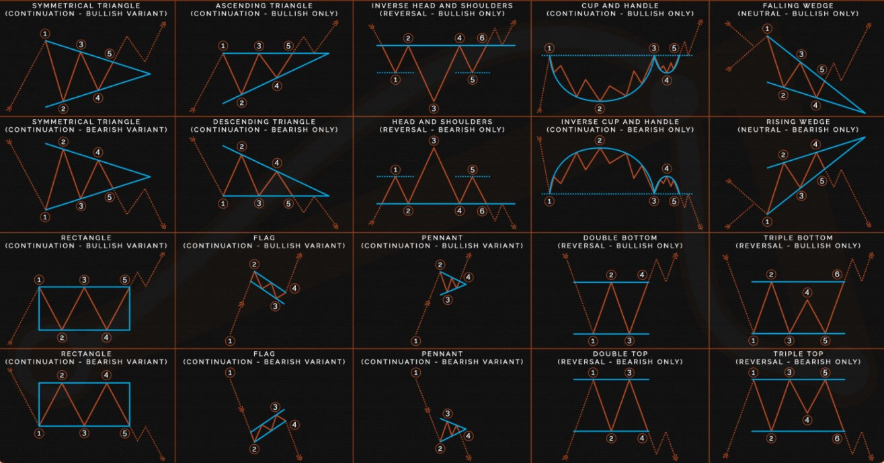

Patronen
Een Forex prijsgrafiek is het startpunt voor alle handelsanalyses. Zelfs handelaren die sceptisch zijn over technische analyse gebruiken nog steeds tot op zekere hoogte grafieken in bij trading. Hier zit een zeer goede reden achter, namelijk dat Forex-grafieken traders een grote hoeveelheid informatie bieden.
Verder zijn er bepaalde Forex patronen die voorkomen in de prijsgrafieken en de basis vormen van verschillende handelsstrategieën.
Conclusie:
Gebruik dus patronen, Een slimme trader kan van de gelegenheid gebruik maken om al deze bekende patronen en methoden te combineren en misschien een onderscheidende en aanpasbare handelsstrategie voor zichzelf te creëren.
mijn mening
Patronen spelen een grote rol in forex, maar je kan het niet gebruiken als een strategie naar mijn mening teminste, je moet de patronen gebruiken als een confermatie. Een zekerheid waar bij jij meer duidelijkheid hebt over wat er kan gaan gebeuren in de markt. Patronen moet je ook niet op elke tijdsperiode gaan gebruiken, je kan er van uit gaan dat een patroon op de 5 minn chart minder impact gaat hebben dan een patroon op de 4h chart.
